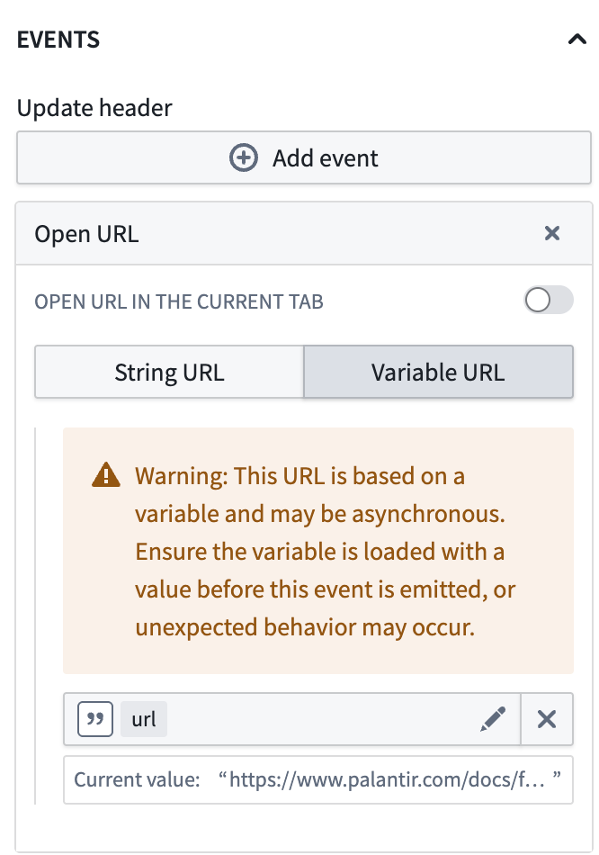
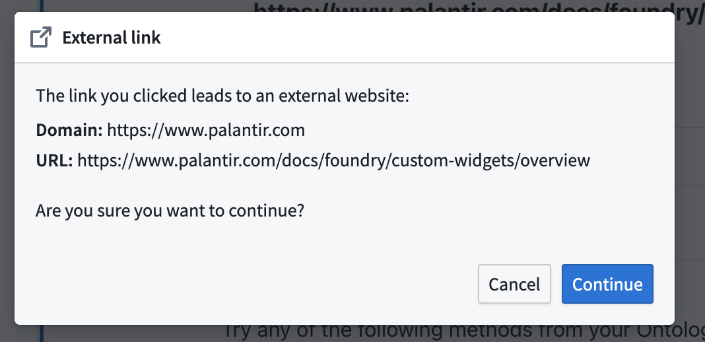

To open a URL from a custom widget in Workshop, emit an event and configure it in Workshop to trigger an Open URL Workshop event as a side effect.
This can be a simple static string URL, or a string variable URL that may be bound to a parameter and updated in the same custom widget event.
:::callout{theme="warning"}
Note that an asynchronous variable may not update before the Open URL event is run. For example, a direct update of a string variable URL as part of the custom widget event is synchronous, but a downstream variable transform to build the string variable URL would be asynchronous.
:::

When opening external URLs, this may trigger a warning dialog.
